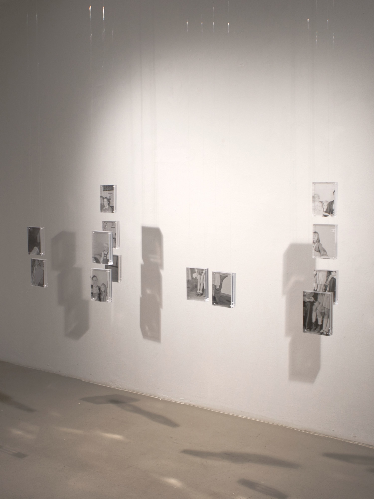
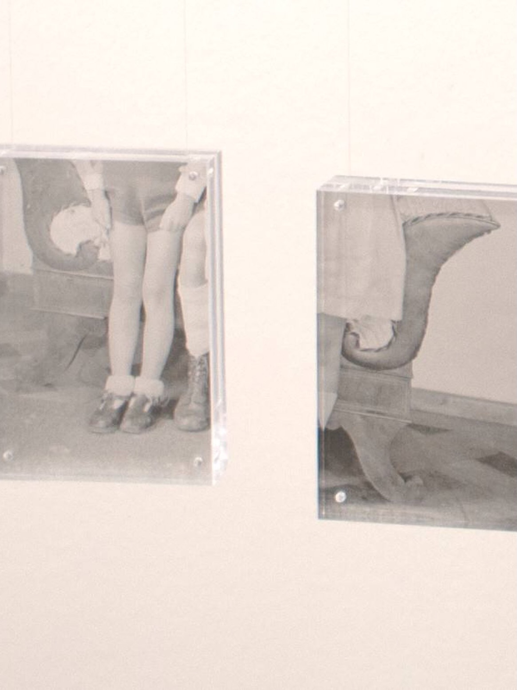

Fiction
Installation, transparent paper between acrylic glass, archive photos 2026


Read text Close text
Two family photographs were cut into pieces of equal size. By cutting them up, the background is brought to the foreground. Connections in meaning are revealed, some that have always existed, others that emerged only through the act of cutting. Tiny images take on gigantic proportions. Individual glances, postures, and movements are viewed in isolation and convey more than the original photograph ever could. One discovers hidden dynamics and listens to family members as they tell or withhold their stories. Through these fragments, the photo series opens up a fictional space in which the viewer fills in the gaps with their own narratives, stories drawn from their own memories to complete the incomplete image.